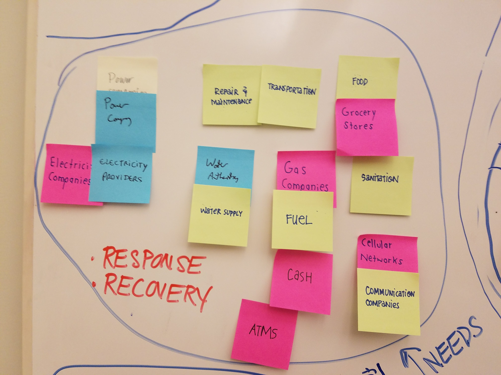
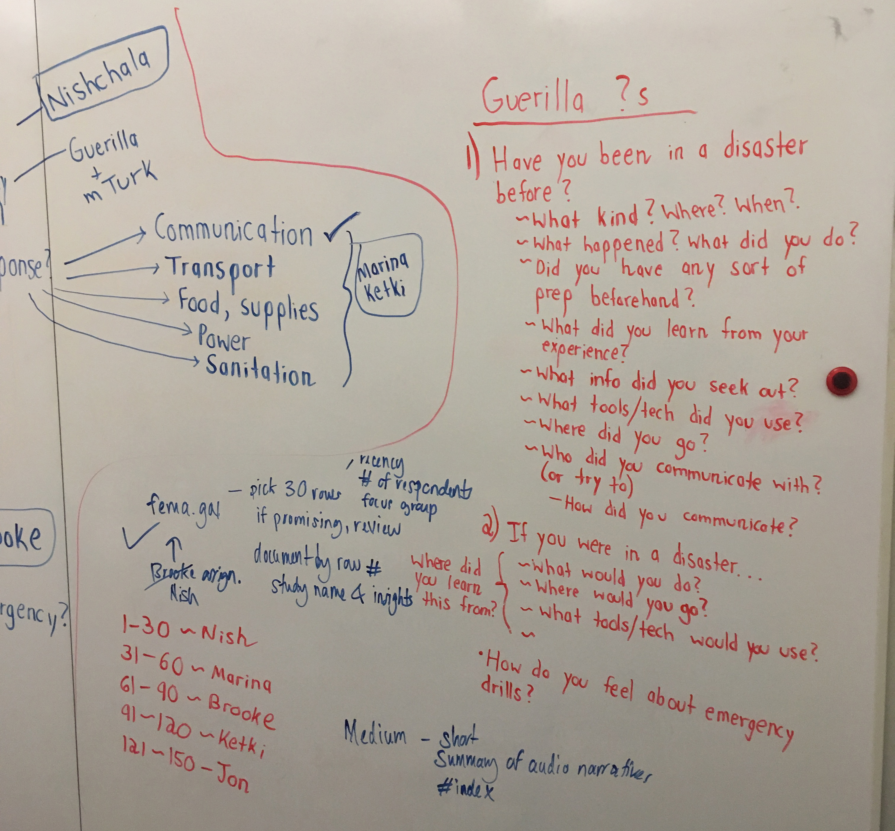
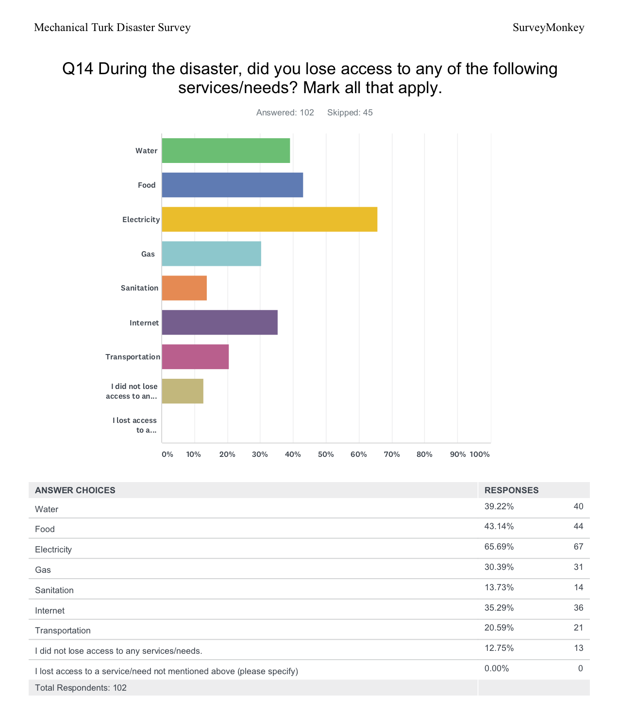

Navigating a Vast Domain (Exploratory Research)
When we would begin a research phase, we turned to four exploratory research methods to better understand how people behave in disasters and why:
Secondary Research

Guerrilla Research

Expert Interviews

Surveys

×
 ❮
❯
❮
❯
Secondary Research
A comprehensive reading of literature, both academic and popular related, to a host of topics related to disasters.

Guerrilla Research
Quick and dirty interviews with people about their experiences with disasters, or what they think they would do in a disaster.

Expert Interviews
Detailed interviews, mostly over gchat with experts in the domain of disaster preparation and management.
Surveys
Amazon MTurk surveys of how people handled and would handle disasters.
